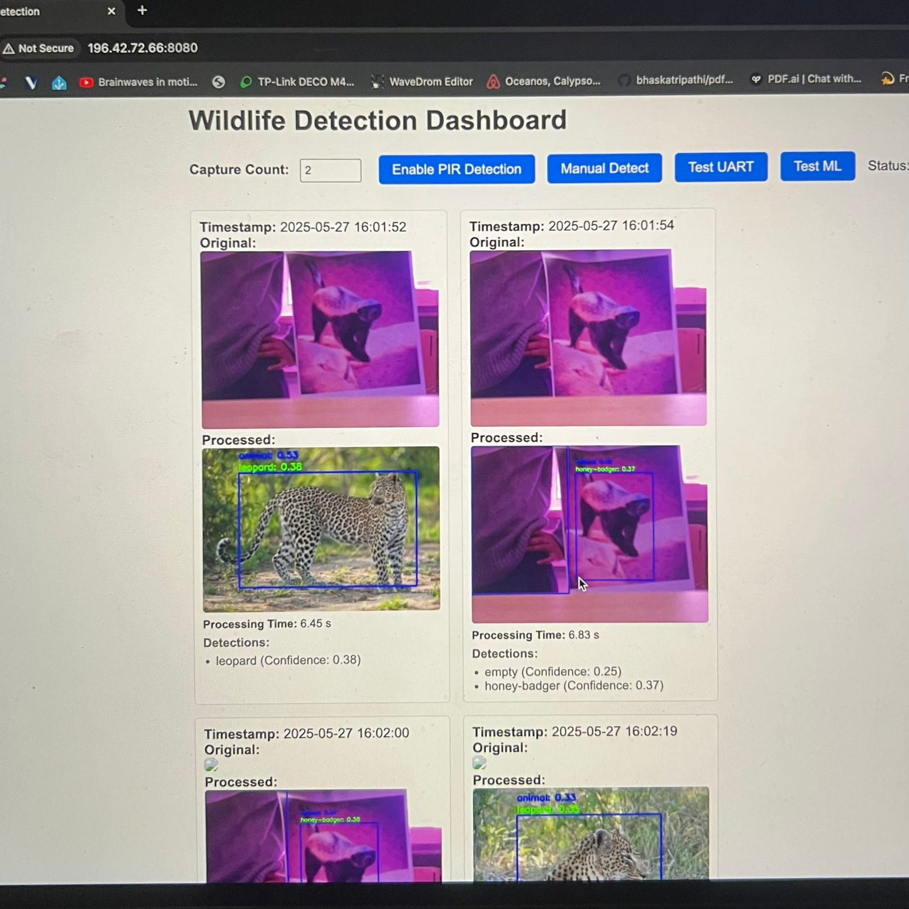
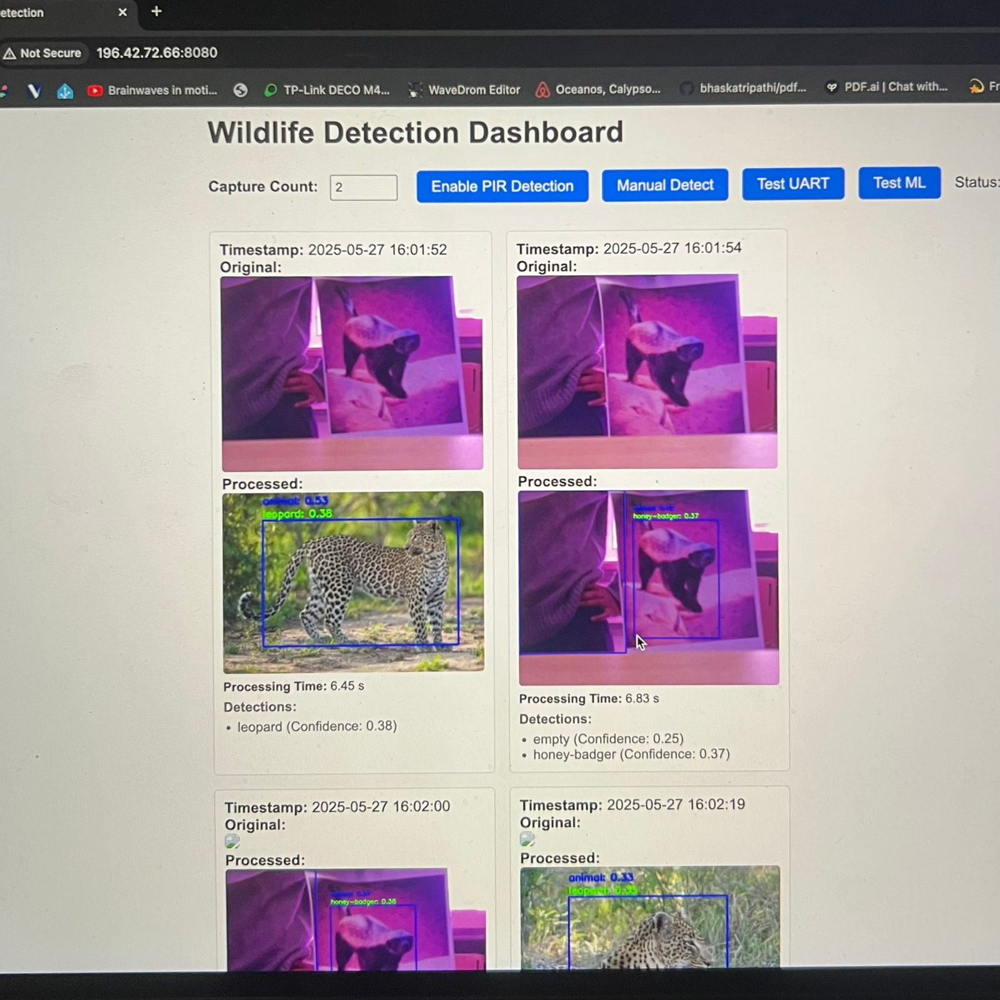

A project focused on protecting penguins using technology.
As part of the UCT EEE4113F course, the De Hoop Nature Reserve requested that the students in the course design a system to protect the enclosure of the African Penguins from animals breaking into the enclosure fence. As the detection subsystem, I designed an edge-computing system that uses a Raspberry Pi Zero 2W, with two passive infrared motion sensors and a Raspberry Pi IR camera to physically detect predators at the fence. The motion sensors pick up movement as an animal approaches the fence and trigger the camera to record what is happening. The Raspberry Pi then uses a custom pipeline of machine learning code that uses a YOLOv5 and TensorFlow model to locally identify and classify the animal, and if a predator is detected, will send a UART message to the deterrent subsystem, as well as log the image and metadata to an online user-interface dashboard.
Key Features
- Custom machine learning models using TensorFlow and YOLOv5
- Machine learning deployment for low-spec hardware using TensorFlow Lite
- Edge computing and optimisation for Raspberry Pi Zero
- Python backend
- Motion sensors and UART connectivity